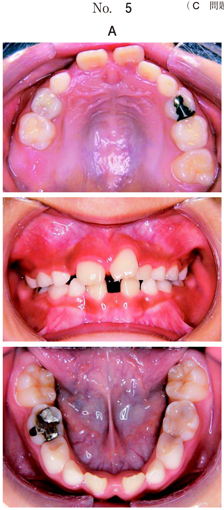
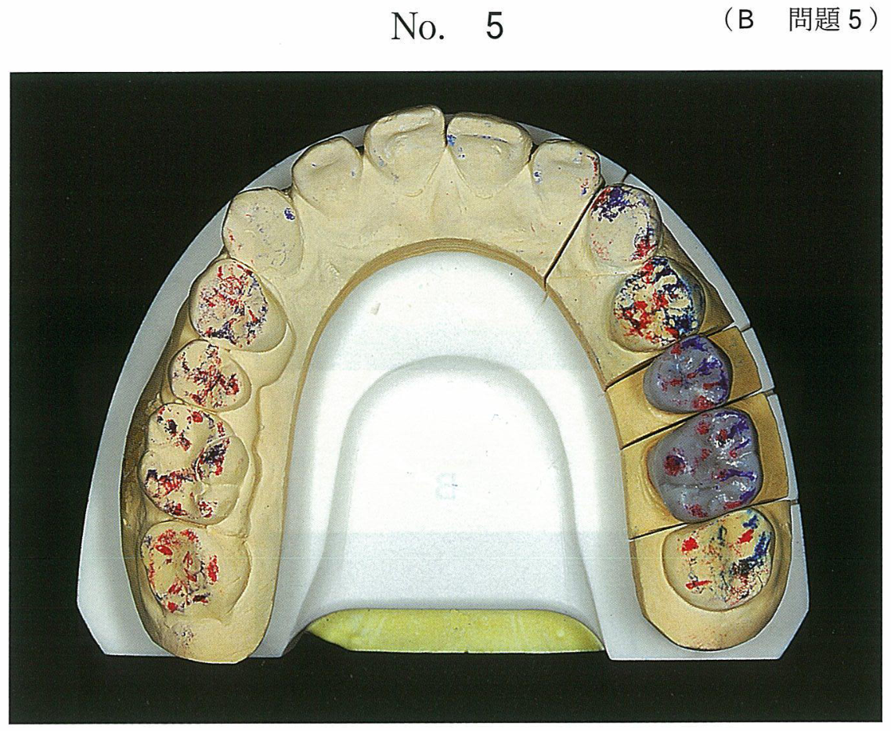
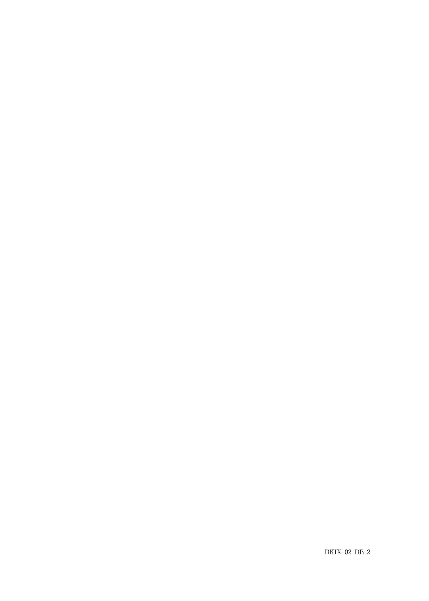

歯根破折
歯根破折の分類
| 分類 | 特徴 | 予後 |
|---|---|---|
| 水平歯根破折 | 外傷性、破折線が水平〜斜め方向 | 部位により異なる |
| 垂直歯根破折 | 歯軸方向の破折、ポストなどが原因 | 不良（抜歯） |
水平歯根破折（外傷性）
外傷により生じる水平〜斜め方向の破折。破折部位により予後と対応が異なる。
破折部位別の対応
| 破折部位 | 対応 |
|---|---|
| 歯頸部付近 | 抜髄後に歯冠修復、または歯根挺出法（矯正力で挺出） |
| 根中央部付近 | 固定して経過観察（保存を試みる） 若年者・歯根未完成歯では特に保存を優先 |
| 根尖部付近 | 固定して経過観察 歯髄壊死時は根尖切除術（破折片除去） |
治癒形態
- 硬組織が形成される
- 結合組織が形成される
- 骨と結合組織が形成される
- 破折部位に炎症性組織が存続（不良）
垂直歯根破折 ★★
原因
- 不適切なポスト（過大なポスト、応力集中）
- 歯内治療時の問題
- 咬合力の集中
- 歯質の脆弱化（失活歯）
診断
- 局所的に深いポケット（1箇所だけ8-9mm、他は正常）
- X線での歯根膜腔の局所的拡大
- マイクロスコープでの破折線確認
- 咬合痛、打診痛
※全周性の深いポケットは歯周炎、局所的な深いポケットは歯根破折を疑う
治療
垂直歯根破折は予後不良であり、基本的に抜歯が適応となる。
- 感染根管治療、根尖切除術、歯肉剥離掻爬術では治癒しない
- 意図的再植法（破折歯を抜去→接着性レジンで接着→再植）も選択肢だが、成功率は限定的
52歳の女性。下顎左側第一大臼歯の咬合痛を主訴として来院した。3年前にジルコニアを用いたオールセラミッククラウンを装着し問題なく使用していたが、1か月前から痛みを感じるようになったという。⎿6のプロービング深さは近心舌側で8mm、他部位は3mm以下であった。初診時の口腔内写真（別冊No.10A）とエックス線画像（別冊No.10B）を別に示す。
原因として最も考えられるのはどれか。1つ選べ。


b 歯根嚢胞
c 歯根破折
d 硬化性骨炎
e 根分岐部病変
【解説】局所的に深いポケット（近心舌側8mm、他3mm以下）が特徴的。これは垂直歯根破折を強く示唆する所見。根管穿孔や歯根嚢胞ではこのような局所的なポケット形成は起こりにくい。根分岐部病変では分岐部に病変が限局する。
73歳の女性。上顎左側側切歯部歯肉の異常を主訴として来院した。10年前に連結前装冠を装着したが、1週前から圧痛があるという。└2のプロービングデプスは、唇側の遠心隅角部で9mm、その他はすべて2mmである。口腔内写真（別冊No.6A）、エックス線写真（別冊No.6B）及び唇側の遠心隅角部の写真（別冊No.6C）を別に示す。
適切な治療方針はどれか。1つ選べ。


b 根尖掻爬術
c 根尖切除術
d 感染根管治療
e 歯肉剥離掻爬術
【解説】局所的に深いポケット（遠心隅角部9mm、他2mm）は垂直歯根破折を示唆。垂直歯根破折は予後不良であり、抜歯が適応。感染根管治療や根尖切除術では治癒しない。歯肉剥離掻爬術は歯周病の治療法であり、歯根破折には無効。
39歳の女性。上顎右側第二小臼歯の違和感を主訴として来院した。1か月前から自覚していたがそのままにしていたという。5⏌には打診痛と根尖部歯肉に圧痛が認められる。初診時の口腔内写真（別冊No.2A）、エックス線画像（別冊No.2B）及び築造体除去後のマイクロスコープ写真（別冊No.2C）を別に示す。
適切な処置はどれか。1つ選べ。


b 根尖掻爬
c 意図的再植
d 歯根尖切除
e 感染根管治療
【解説】マイクロスコープ写真で破折線が確認できる（垂直歯根破折）。垂直歯根破折は予後不良であり、抜歯が第一選択。意図的再植は選択肢になりうるが、成功率は限定的であり、本問では抜歯が適切。
まとめ：歯根破折の鑑別と対応
| 所見 | 疑う疾患 | 対応 |
|---|---|---|
| 局所的に深いポケット（1点のみ） | 垂直歯根破折 | 抜歯 |
| 全周性の深いポケット | 歯周炎 | 歯周治療 |
| 外傷後の水平破折（中央部） | 水平歯根破折 | 固定・経過観察 |